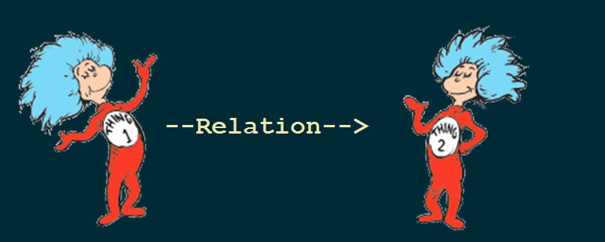
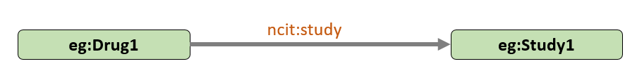
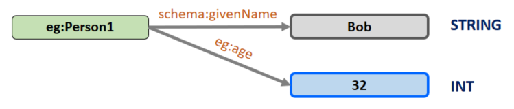

Linked Data for Clinical Trials
Hands-on Workshop
PhUSE CSS 2018
Silver Spring MD
04 March, 2018
Instructors
Tim Williams
Johannes Ulander
Assisted by:
- AJ Cook
- Stephen Nowell
(for later)
Outline
- (very brief) Introduction to Linked Data
- Create a Study Graph
- Query Graph Data
- Ontology and Inference
- Merge Studies
- Linked Data Demos
Preparation
- Your laptop [Power up!]
- Copy of:
- Exercises
- Graph Editor Introduction
- Info sheet
- SPARQL reference
- Log in to Cloud Server
Outline
- Introduction to Linked Data
- Create a Study Graph
- Query Graph Data
- Ontology and Inference
- Merge Studies
- Linked Data Demos
Different types of Linked Data
Property Graph
Resource Description Framework (RDF)
Data as a Graph?



"Things" need unique identifiers
IRI: Internationalized Resource Identifier
- Unique Identifier
- Uses HTTP://xx.xx.xx/xxxx
Prefixes
- Prefixes shorten IRIs for readability
@prefix eg: <http://example.org/LDWorkshop#> .
@prefix ncit: <http://ncicb.nci.nih.gov/xml/owl/EVS/Thesaurus.owl#> .

Workshop Prefixes
| eg | http://example.org/LDWorkshop# |
| ncit | http://ncicb.nci.nih.gov/xml/owl/EVS/Thesaurus.owl# |
| schema | http://schema.org/ |
literals
- string
- number
- integer (INT)
- date
No links from a literal
Outline
- Introduction to Linked Data
- Create a Study Graph
- Query Graph Data
- Ontology and Inference
- Merge Studies
- Linked Data Demos

Introduction to the Graph Editor
Exercise
1. Create a Study Graph
Outline
- Introduction to Linked Data
- Create a Study Graph
- Query Graph Data
- Ontology and Inference
- Merge Studies
- Linked Data Demos
Exercise
2. Query Graph Data
Outline
- Introduction to Linked Data
- Create a Study Graph
- Query Graph Data
- Ontology and Inference
- Merge Studies
- Linked Data Demos
Ontology
A vocabulary of things and how they relate to each other
- ...just more nodes and links
- Tools: Protege, TopBraid
Reasoner
An engine that applies the ontology to the graph and infers values and relationships not in your original data.
Think about that again:
Ontologies and Reasoning create values
and relations
not in your original data!

StudyOntology.TTL
Exercise
3. Ontology and Inference
Outline
- Introduction to Linked Data
- Create a Study Graph
- Query Graph Data
- Ontology and Inference
- Merge Studies
- Linked Data Demos
When IRIs are the same, merging is automagic!

With RDF, Merging be like:

What? How?

Exercise
4. Merge Studies
Drug 1 Pool
Network GraphOutline
- Introduction to Linked Data
- Create a Study Graph
- Query Graph Data
- Ontology and Inference
- Merge Studies
- Linked Data Demos
But first: Acknowledgements
- PhUSE - server costs
- Stephen Bamford
- Chris Decker - server cloning
- Lauren, Wendy, Jane, Tora and the entire PhUSE admin team
- Stardog Union - Triplestore, configuration, support.
- ...everyone else I forgot to mention
- And: YOU!
But Second: Resources
- Workshop materials, including the Graph Editor, SPARQL scripts, PDF of this presentation:
https://github.com/phuse-org/LinkedDataWorkshop/CSS2018
Resources
Introduction to Semantic Web
What is Linked Data?
Introduction to Linked data
Woof!
It is DEMO TIME!
StarDog Demo
Extra Slides
SDTM can be improved

- Non-extensible, two dimensional
- Data repetition
- Terminology, codes not linked
- Version Conversion: time, $£€
- Does not model study entities
- Lacks integral metadata
... and more.
- 26% of CDER SDTM applications: at least 1 error
Opportunites
- Merge data from diverse sources (no silos!)
- Data integration across the life cycle
- Integral Metadata
- High quality submissions data
- New ways to explore and analyze
- Build a foundation for AI and ML
- [!! YOUR IMAGINATION !!]